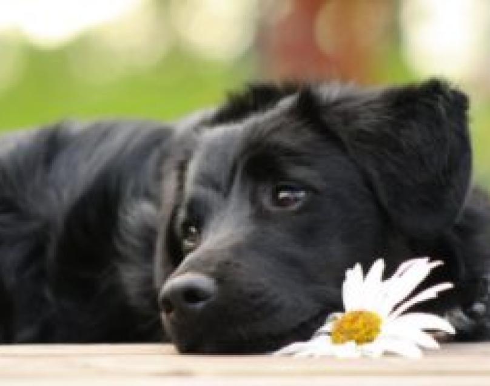
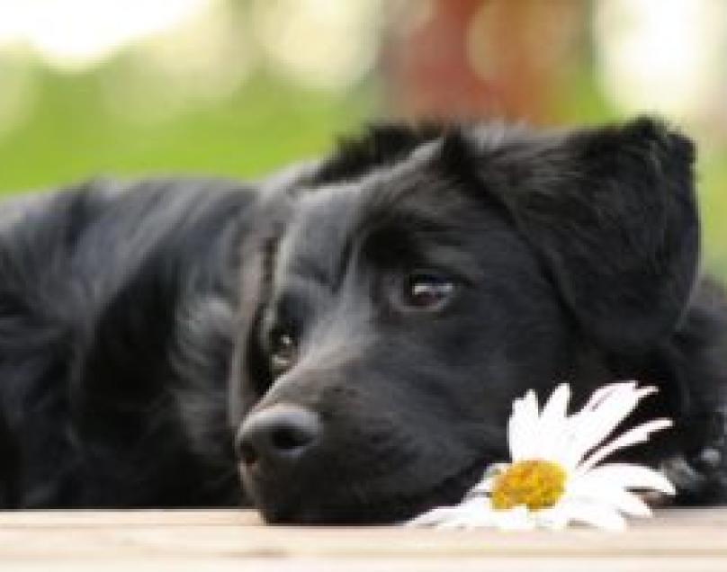

About Us
Bouchalka Dog Shelter was founded in 1989. Originally, it had only 7 kennels and served as a dog hotel. Later, the needs of the municipalities outweighed and hotel services became a marginal issue. The shelter began operating as a shelter in 1993. The shelter then expanded to 88 kennels, with a nursery added. Another 7 internal kennels with outdoor runs and 8 outdoor kennels with insulated kennels were built. In the summer of 2013, another 5 heated kennels were added. The shelter was completely covered against direct sunlight. Later, we added another 5 heated kennels in a different style to make them as functional as possible, but also beautiful. In 2016, new kennels with heated kennels were built, serving mainly for mother dogs with puppies and small dogs.
 
